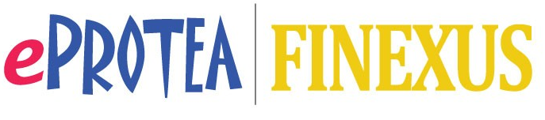

PEKERJAAN
Berikut ini daftar kegiatan yang saya ikuti
telurusi dengan mengklik link dibawah ini :


The Kops
Liverpool F.C. ditubuhkan pada 15 Mac, 1892 oleh John Houlding, pemilik padang Anfield. John Houlding memutuskan untuk menubuhkan pasukan bola sepaknya sendiri selepas bertelingkah mengenai kadar sewa dengan tuan punya kelab Everton F.C. yang sebelum itu menyewa padang Anfield daripada John Houlding. Dalam 1891 John Houlding, membeli tanah lapang bersebelahan Anfield dan mencadangkan menaikkan sewaan daripada £100 kepada £250 setahun. Ahli-ahli kelab Everton membantah dan meninggalkan Anfield dan berpindah ke Goodison Park. Nama pasukan yang ditubuhkan oleh John Houlding pada asalnya hendak didaftarkan atas nama Everton, tetapi hajatnya ditolak oleh Persatuan Bolasepak England. John Houlding seterusnya memilih nama Liverpool untuk kelab barunya. Pada tahun 1894, Liverpool telah dipilih untuk menyertai liga bola sepak. Ditinggalkan dengan tanah kosong dan 3 orang pemain, John Houlding memutuskan untuk menubuhkan kelab bola sepaknya sendiri. Pada 15 Mac 1892, Liverpool F.C. ditubuhkan John McKenna dilantik menjadi Pengarah dan Pengurus Pasukan dan terus mengambil 13 orang pemain profesional dari Scotland untuk menyertai Liverpool.
Hary Nugraha Putra
Keahlian :
Foto-Foto
Traveller
Programmer
Berikut ini daftar kegiatan yang saya ikuti
telurusi dengan mengklik link dibawah ini :
kritik dan saran
Kunjungi saya disini , atau tinggalkan pesan lewat form berikut